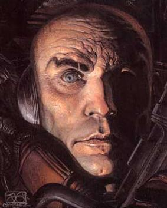
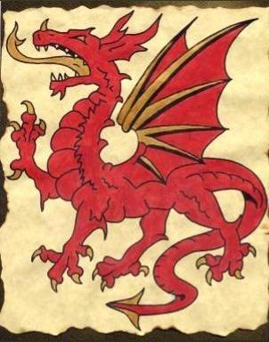

Sommaire
- 1 L'intérim de Pendragon (Novembre et Décembre 307 ETU)
- 2 Chroniques d'Eveil - Suite 2
L'intérim de Pendragon (Novembre et Décembre 307 ETU)
Au cours de cette période, de nombreux événements se sont déroulés simultanément. Qioiqu'ils ne soient pas réellement indépendants, nous produirons des récits ditincts afin de clarifier la lecture.
Cette période fut très importante dans l'histoire d'Eveil car elle constitue une ère de changements après le règne de Katradhan : chacun comprend que le temps est venu de jouer ses billes, pour le meilleur et pour le pire.
Situation au sortir du règne de Katradhan

Au début de l'intérim d'Arthur Pendragon, les principales forces en présences sont les suivantes :
- Les Apolystes sont la princpale force en présence avec plus de 25 membres, dont certains extrêmement puissants, tels que Yersin, Eruld, Stanislas Kraegor, Tiz, Pioupiou, Siklaris Tahl, etc. Ils vont être les premiers à découvrir la fusion extrasectoriel et à coloniser le secteur 0, grâce à un puissant réseau de recherche mis en place par Yersin.
- Avalon est à l'époque presque inconnue et la plupart de leurs membres sont en discrédit car ils ont été les principaux soutiens de Katradhan. Toutefois, ils se retrouvent désormais maîtres des institutions galactiques grâce à la Capitale et disposent donc de marges de manoeuvre. Par ailleurs, leur faible nombre les met à l'abri de tentatives d'espionnage sans trop céder en puissance. Pendragon lui-même, Lauaki et La lignée de l'Eld sont d'une force plus que respectable et les deux derniers vont par ailleurs prendre une importance politique de plus en plus importante.
- Le Parti Indépendatiste Galactique perd sa raison d'être avec la disparition de Katradhan et va rapidement disparaître en dépit de quelques tentatives pour le restaurer.
- Enfin, plusieurs coalitions mineures existent : La Fondation est la principale, tandis que Chimère va bientôt naître dans le secteur 3.
Mais les choses vont rapidement évoluer...
Le déclin des Apolystes (novembre)
Bien que représentant la plus puissante force à l'issue du règne de Katradhan, les apolystes souffrent de nombreux problèmes internes : les cadres de cette coalition (Eruld, Tiz, Stanislas Kraegor) recrutent en masse de nombreux commandants, sujet sur lequel ils connaissent de nombreux désaccords. Bientôt, ils possèderont 40 membres et sont donc certains d'être infiltrés. Qui plus est, cela se répercute sur leurs recrues.
De fait, des politiques discriminatoires sont mises en place, certains priés de passer à la caisse pour bénéficier de l'aide technologique qui était supposée être gratuite, les informations ne sont pas partagées, etc. Ensuite, cette base n'est guère consultée, et pour cause : les pilliers de la coalition ne sont pas des démocrates dans l'âme contrairement à nombre de leurs ouailles. Cette base est donc inexploitable pour servir les visées apolystes, quelles qu'elles soient.
Ensuite, l'ensemble est devenu ingérable : les cadres ont perdu leur pouvoir faute d'avoir su s'imposer au début. Eruld ne parvient pas à rétablir l'ordre dans sa coalition et, quelque peu dépité par cet échec et le fait qu'Avalon récolte la capitale en ayant seulement su s'attirer les bonnes grâces de Katradhan, va se désintéresser peu à peu de sa création et même de son propre empire.
Des expansionnismes mis en cause
Pourtant, au cours des semaines à venir, les Apolystes vont gagner en confiance, trop sans doute, et se sentir peu à peu intouchables. Plusieurs de leurs membres, très puissants, vont être impliqués dans des conflits de plus en plus nombreux, suscitant beaucoup de critiques.
D'abord relayées de façon individuelle au sein des tavernes ou de la salle des plaintes de l'Assemblée, celles-ci gagnent en puissance lorsque Gregorio Greco ouvre le débat à l'Assemblée (Intervention:Les Apolystes passent à l'action), le 10 novembre. Le concert de protestations fuse et nombreux sont ceux à rapporter menaces, attaques, infractions à la règle du premier arrivé, premier servi, etc.
Evidemment, nombre de ces plaintes sont hypocrites : certains ont ouvert le feu les premiers (même s'il est vrai que les apolystes se montrent très susceptibles face à la moindre sonde perdue, quand bien même celle-ci serait placée sur une orbite étrangère), d'autres ont piraté leurs comptes (la fortune de leurs membres suscitant bien sûr des convoitises) mais l'effet global est des plus nuisibles. En revanche, on compte bel et bien parmi le lot des opérations d'expansion territoriale réalisées aux dépens d'autres commandants.
Par ailleurs, le secteur VI, où les apolystes se ligueront contre le V Rajas, seront aussi l'occasion pour leurs adversaires d'affirmer qu'ils manipulent le gouvernement. En effet, les apolystes en soutenant l'action de Pendragon (sans doute pour récupérer les possessions du Rajas), qui n'est guère populaire, prêteront le flanc à de telles accusations. Enfin, ce sera un conflit de plus dans une longue série.

L'organisation du front anti-apolyste
Initalement, les apolystes conservent leur union et les plus modérés ou pacifiques demandent à ne pas être jugés sur l'attitude de quelques uns. Somme toute, moins d'un quart des apolystes sont en effet pointés du doigt mais ce sont les plus influents. Sauf que, sous peu, les choses dégénèrent les apolystes vont devenir les mauvais garcçons de service, ceux que l'on désigne volontiers du doigt. Leur puissance démesurée fait peur et beaucoup représentent leurs adversaires en héros luttant contre la tyrannie. C'est parfaitement hypocrite mais cela fonctionne très habilement. Et certains, notamment parmi les membres d'Avalon, n'hésitent pas à sasiir ces discours pour critiquer discrètement mais de façon fort opportune les apolystes, et jeter un peu d'huile sur le feu.
Et, pendant ce temps, des manoeuvres se déroulent en sous-main : en premier lieu, deux jours après le concert des plaintes, une rumeur est lancée par des membres d'Avalon, affirmant que les apolystes s'apprêtent à lancer de nombreuses offensives contre plusieurs cibles, que les vaisseaux sont psitionnés et prêts à l'emploi. Comme chaque système compte au moins un apolyste à son point d'entrée, ne serait-ce que pour des besoins de renseignements, la paranoïa ne tarde pas à sévir. Dans le même temps, l'escalade continue entre les apolystes et certains commandants, jusqu'à en gagner d'autres. C'est ainsi que le 24 novembre, Rivain Laplace leur déclare une guerre ouverte, en dépit de sa faible puissance.
Mais ce n'est pas tout : peu de jours après le concert des plaintes, un front anti-apolyste, la Confrérie, est créé et animé en secret par Commandant:Gregorio Greco. Ce dernier est très actif et cherche à recruter de l'aide. Trop ouvertement sans doute, la manoeuvre ne tardant pas à être découverte et le lieu de réunion de ces partisans capturé par les apolystes, ses archives mis au jour le 26 novembre (Intervention:Guerre ouverte). Dans le même temps, Merlin (membre d'Avalon) lance une intiative similaire avec un front anti-apolyste.
Enfin, en interne, certains agitent les apolystes réticents devant ces opérations. Et cela fonctionne puisque bientôt, Pioupiou (aujourd'hui membre d'Avalon), quitte les apolystes et crée la Ligue Millénisienne rassemblant six commandants contre eux, entraînant avec lui d'autres membres des apolystes.
Les guerres du secteur 3


Un nouvel élément déterminant va se jouer sous peu, entre le 15 et le 25 novembre. En effet, Dieu le Fils va à ce moment se lancer dans une phase d'expansion territoriale sur le dos des petites nations du secteur 3 mais aussi contre celles d'Avalon. La réponse ne se fait pas tarder et elle est militaire. Mais Dieu le Fils leur offre alors une publicité à peine croyable en venant à l'Assemblée revendiquer ses conquêtes et se présentant comme l'homme résistant seul à Avalon, rôle peu crédible s'il en est (Je suis contre!). Pourtant, Avalon ne réplique pas.
Cinq jours plus tard, le 20 novembre, c'est Yersin qui vient à l'Assemblée se présenter cette fois en défenseur des opprimés contre Dieu le Fils, voulant prifter de l'occasion pour redorer son blason. Mais Thyrius, élu officiel du secteur 3, a tôt fait de le rembarrer lui rappelant que, lui aussi, en son temps, a infligé de nombreuses pertes aux jeunes nations du secteur 3. Cette fois-ci, Avalon saisit la balle au bond...
Mieux : trois jours après, le 23 novembre, la Lignée de l'Eld, présente à l'Assemblée une allocution intitulée Les Anges du secteur 3 où elle somme publiquement les Apolystes de resituter les planètes conquises en secteur 3 et insinue que ceux-ci, loin de mener la guerre à Dieu le Fils, en seraient en fait les commanditaires, se bornant à lui racheter ses planètes. Lauaki, candidat à l'élection présidentielle, va de son côté rappeler qu'Avalon a permis la resitution de nombreuses planètes capturées aux natifs du secteur 3. Et voici que Dieu le Fils va confirmer avoir reçu de l'argent des apolystes (sans toutefois reconnaître qu'ils soient ses commandaitaires).
Thyrius, l'élu du secteur 3, aura eu beau jeu de son côté de chercher à se démarquer des luttes d'influence, le fait est que l'épisode aura encore une fois tourné au scandale contre les apolystes, tout en offrant une véritable tribune à ces mystérieux Anges du Secteur 3 dont, bientôt, Uther Pendragon va murmurer le nom : Avalon.
Au passage, le secteur 3 fut le premier et seul terrain d'opposition concret à cette époque entre les Apolystes et Avalon, plus précisément entre Pendragon d'une part et, d'autre part, Yersin soutenu par les finances de Stanislas Kraegor. Aucune des deux parties n'eut cependant envie d'en découdre ailleurs et le conflit ne se généralisa pas. Toutefois, les mêmes belligérants reproduiront plus tard ce conflit pour d'autres raisons.
Dieu le Fils et le secteur III
Au final, les apolystes perdront presque tous leurs membres, même les pilliers devant quitter la coalition, jusqu'à leur candidat aux élections qui doit les quitter en plein campagne électorale. Le 4 décembre, la veille des résultats des élections qui donneront une large victoire anticipée à Lauaki, représentant d'Avalon, Eruld annonce son départ (Eruld est mort, vive Eruld) des apolystes et sa mise en retraite, non sans afficher un certain mépris pour nombre de ses anciens collègues. Cet acte sonne en quelque sorte le glas des apolystes qui ne mourront pas et sauront même renaître plus tard sous la volonté de Johndoeww mais ne seront jamais plus que l'ombre de ce qu'ils furent, une gigantesque coalition d'envergure galactique.
A contrario Avalon a, au cours du mois de novembre, largement oeuvré pour la défaite des apolystes et en sort clairement vainqueur malgré une position d'outsider au début. Ils n'ont pas à proprement parler provoqué la chute des apolystes mais ils ont su tirer partie des erreurs de ceux-ci pour les mener à leur chute et sans avoir recours à la force militaire.
Pourtant le nom d'Avalon demeure encore presque inconnu, et sans doute cela les a t-il aidé (des actions en apparence individuelles suscitent moins de méfiance que celle d'une organisation). C'est le 30 novembre seulement que leur existence sera révélée au grand jour par la diffusion d'un récit sur cette organisation (La levée des brumes) dont on a tout lieu de croire qu'elle fut orchestrée par les dirigeants d'Avalon eux-mêmes. Par la suite, Avalon ne va avoir de cesse de s'imposer comme la nouvelle force dominante, position qui sera confortée par les élections à venir.
L'avénement de la démocratie (début novembre)
Dès la chute de l'influence de Katradhan on commença à débatte de ce qui devait suivre. Pour Arthur Pendragon, à qui son père avait confié la capitale et qu'il tenait lui-même de Katradhan, les choses étaient claire : Eveil n'était "pas prête pour s'autogérer". Avant de poursuivre, faisons un bilan des institutions en place :
- Dix gouverneurs ont été nommés par Katradhan et seront à peu près conservés par Pendragon. Trois appartenaient à Avalon,un autre les a rejoints, un dernier est sympathisant quoique officiellement dans une autre coalition.
- Les élections pour les représentants sectoriels tardent à se mettre en place et très peu ont été élus.
Pendragon propose de conserver ces institutions, avec quelques légère modifications :
- Le conseil des élus pourra détrôner un des gouverneurs nommés par Pendragon en cas de "faute grave".
- Ce même conseil pourra décider des bannissements à l'Assemblée.
- Enfin, ce conseil des élus est renommé "Conseil Constitutionnel" mais ne semble pourtant pas avoir pour charge de rédiger une constitution. Ce qu'il fera tout de même sur son initiative.
- Le conseil des gouverneurs (nommés par Pendragon) est nommé Table Ronde. Son rôle est... de "gérer" les contrebandes.
- Pendragon s'adjoindra un analyste financier (Stanislas Kraegor) et un coordinateur sectoriel (Rivain Laplace).

Génèse de la constitution
En somme, il conserve pour l'essentiel la même organisation dictatorielle que Katradhan. Mais cela ne va pas sans de nombreuses contestations et à l'époque les seuls à soutenir Pendragon sont les avaloniens. Sauf que le nom d'Avalon est encore très minoritairement connu et que ces réactions semblent donc spontanées et indivudelles.
Toutefois, la pression est trop forte et rapidement Avalon va devoir changer de stratégie notamment lorsque Anne Bonny, élue sectorielle, met le 7 novembre sur la place publique le projet de constitution qu'elle tente de faire adopter par le Conseil Constitutionnel (La constitution dont Tiz ne veut pas). Constitution que Merlin et La Lignée de l'Eld, gouverneurs et membres d'Avalon vont soutenir. S'agit-il d'une décision concertée d'Avalon ou d'une volonté d'infléchir la position de Pendragon ?
Toujours est-il qu'après cela le Conseil Constitutionel va rapidement l'adopter et, une semaine après qu'Anne Bonny l'a présentée à l'Assemblée, celle-ci se voit proposer d'approuver ou non cette constitution, par Pendragon lui-même. Bien que le texte soit mal ficelé, laissant de nombreuses zones d'ombres qui susciteront plusieurs controverses lors du premier scrutin présidentiel, elle est adopté par 49 voix contre 11 en moins de 24 heures (un délai étrangement court) !
Arthur Pendragon se voit donc contraint de proclamer cette constitution le lendemain, le 15 novembre. Cela n'enchante guère son père qui, à son retour, adressera une rebuffade publique à son fils. Toutefois, il honorera la parole de clan Pendragon et le jour même on voit fleurir les première candidatures, en pleine guerre froide entre Avalon et les Apolystes.
L'élection de Lauaki et la montée d'Avalon (mi-novembre à mi-décembre)
Très rapidement (du 17 au 27 novembre), un débat est organisé par Rivain Laplace, devenu membre d'Avalon. Quoique de nombreux candidats se soient présentés au départ, nombre d'entre eux vont se désister, soit pour éviter une défaite cuisante, soit pour laisser la place au représentant d'Avalon contre celui des Apolystes (c'est le cas de Gregorio Greco et Anne Bonny). Au final, seul trois candidars demeureront : Lauaki, Siklaris Tahl, Dark Night.
Les candidats

Le premier, Lauaki, est le représentant d'Avalon, le seul de ses membres qui n'ait pas collaboré avec Katradhan. Il présente le moins interventioniste des trois programmes (création d'un tribunal, d'une force de sécurité, libre criculation dans les systèmes 0) et sera aussi le seul à reconnaître, après les questions aux candidats, envisager la mise en place d'une taxe (2% sur les échanges de contrebande). Sa principale qualité est... de n'avoir pas de défauts évident, contrairement aux autres.
Le second, Siklaris Tahl, est avant tout membre des Apolystes. Et, en pleine chasse aux sorcières contre cette coalition, il va subir nombre de récriminations, si bien qu'il quittera ce groupe en pleine campagne, arguant trop de divergences personnelles entre lui et les Apolystes. Toutefois, beaucoup crieront au coup monté et. Par ailleurs, il présentait un programme très étatiste : création d'une banque de prêt aux commandants situés sous un seuil de pauvreté à définir, d'un tribunal, d'une armée, de représentants de profils, de bourse technologique, etc).
Le troisième et dernier, Dark Night, est l'outsider : atteint d'une élocution difficile, souffrant d'un grave nombre de crédibilité, il soumet par ailleurs un programme simpliste. Celui-ci reprend caricatural toutes les mesures de Siklaris Tahl, assaisonnées d'un soupçon de populisme (toutes les lois seront votées par référendum, etc).
Premier tour
Bien qu'Avalon aura tenté (avant de se faire connaître publiquement), via Rivain Laplace, de manipuler l'ordre de passage des candidats en plaçant Lauaki en dernier, les différents intervenants, via leur question, et les candidats via de nouvelles interventions, ruineront cet effort. Qu'importe, il y aura d'autres malversations et controverses.
Le scrutin est donc mis en place, le premier tour débutant après la révélation de l'existence d'Avalon, le 2 décembre, et durant trois cycles. Celui-ci commence avec un discours officiel de Pendragon qui saisira l'occasion pour encourager à voyter Lauaki, ce qui ne manquera pas de soulever quelques contestations. Par ailleurs, Dieu le Fils protestera devant l'absence de reconnaissance des votes blancs. Les résultats donneront une courte majorité absolue à Lauaki :
- Lauaki : 45 voix sur 89
- Siklaris Tahl : 28 voix
- Dark Night : 16 voix
Second tour
Mais la constitution, si elle stipule bien que le scrutin est à deux tours, ommet d'en préciser les modalités ! Ainsi, obtenir la majorité absolue ne dispense pas d'un second tour. Pire ! Il n'est même pas dit que seuls les deux candidats ayant obtenu les meilleurs scores doivent être présents au second tour. Lauaki, en plein milieu de son discours d'investiture(L'éveil du Maori) se voit donc interpellé sur ces points et, face au tollé général et à la demande de Siklaris tahl, un second tour est organisé, avec exactement les mêmes candidats, sans que l'on sache ce qu'il conviendra de faire si les résultats devaient être divergents. Fort heureusement, aucune crise institutionelle ne survient et Lauaki s'en trouvera encore renforcé.
Ce nouveau tour démarre le 7 décembre et dure cette fois aussi trois cycles. Cette fois-ci, Pendragon n'aura pas à promouvoir Lauaki puisque c'est ce dernier qui prononce en personne le discours officiel donnant le coup de feu du second tour. Manière de dire qu'ils est déjà le nouveau possesseur de la capitale. Voici les résultats :
- Lauaki : 49 voix sur 79
- Siklaris Tahl : 23 voix
- Dark Night : 5 voix
- 2 votes blancs
Lauaki est donc nommé, le 10 décembre, premier Président d'Eveil, sonnant le règne d'Avalon.
L'instauration du Royaume Malder (octobre à novembre)
C'est durant l'intérim de Pendragon que se déroulèrent l'essentiel des événements qui conduisirent Malderash à déstituer le V Rajas pour instaurer ce que nous connaissons actuellement comme le Royaume Malder et qui recouvre l'ensemble du secteur VI.
Initalement, les premières briques du royaume furent posées sous Katradhan, alors que le V Rajas avait été nommé lieutenant de Katradhan, à qui il avait confié Efficacité, centre de contrebande du secteur VI. Initialement absent de ce secteur (il est originaire du secteur 2), le V Rajas en profita pour s'y implanter massivement, alors qu'à cette époque personne ne possédait encore la fusion extrasectorielle. Cela suscita plusieurs plaintes des natifs du secteur.
Rapidement, le ton monte entre Le V Rajas d'une part et, d'autre part, Lask, Zorg et leur coalition, le Protectorat Valerian. Le lieu de la diplomatie officielle du secteur 6 devient le théâtre de nombreuses tensions et on assiste bientôt aux premières escarmouches. Celles-ci se terminent rapidement mais Lask prend contact avec les apolystes en espérant faire basculer le jeu. Pendant ce temps, le V Rajas poursuit sa colonisation et conquiert près de la moitié du secteur.
Passes diplomatiques

Tout change lorsque Pendragon arrive à la tête des institutions galactiques. Dès le début il annonce en effet son intention de remplacer quelques uns des administrateurs de contrebande et de n'y placer que des natifs des secteurs concernés. Partant de là, un ballet diplomatique va se produire dont les positions sont les suivantes :
- D'abord, Lask joue sur le fait que le V Rajas a été un des suppôts de Katradhan pour le discréditer, jouant la carte Pendragon. Evidemment, le V Rajas rappelle que Pendragon n'est que le successeur nommé par Katradhan et que rien ne change réellement.
- A propos des possessions du secteur, le V Rajas accuse Lask de se servir des apolystes contre lui, tolérant que ceux-ci colonisent le secteur tout en visant à l'expulser, lui. Lask rétorque qu'à sa demande les apolystes ont gelé la colonisation.
- Sur la contrebande, le V Rajas accuse publiquement, le 23 octobre, le Protectorat Valerian de viser l'hégémonie sur le secteur VI mais aussi de vouloir le chasser du secteur une fois qu'il aurait rendu la contrebande. A cela, Lask rétorque le 26 octobre qu'il ne souhaite que le retour de la contrebande à l'un des natifs y compris, si le V Rajas le désire, Hellzmaster qui est l'un des alliés du Rajas au sein de la Fondation et natif du secteur 6.
Le V Rajas saisit la perche et cède donc la contrebande à Helklzmaster. Mais, le 27 octobre, Lask revient sur ses paroles et affirme que Hellzmaster n'étant pas gouverneur il ne peut garder la contrebande et doit lui remettre en mains propres. En effet, Stanislas Kraegor, qui vient d'être nommé responsable du commerce et des contrebandes, confirme la nomination de Lask à ce poste et, avec toute la subtilité qui le caractérise, somme Hellzmaster de faire le choix suivant : "En réalité le choix est le suivant: soit je cède la planète sans coup férir et sans geindre comme un gamin à l'AG et on oubliera peut-être que j'ai été un vilain garnement, soit je me la fais prendre par la force et, en représailles, je me fais également amputer des trois quarts de mon empire et de la totalité de mes alliés."
Le même jour, les flottes de Pendragon débarquent en secteur VI. Toutefois, le gouvernement semble reculer après avoir mieux pris connaissance du dossier. En effet, le 27 octobre Stanislas Kraegor déclare avoir été un peu vite en besogne et se donne un temps pour réfléchir. Mais, quatre jours plus tard, le 31 octobre, il confirme sa décision et pose à Hellzmaster un utlimatum. Mais, dans le même temps, Lask a tenté de reprendre de force cette contrebande. Le Rajas, de son côté, prend comme motif un message de Laks l'ayant accusé d'être aux bottes de Katradhan pour lui déclarer une guerre le 5 novembre.
La guerre


Début novembre, les hostilités vont donc définitivement reprendre. D'abord, les apolystes vont mettre en place la cellule numéro 2, composée de plusieurs d'entre eux, chargée de combattre le Rajas pour officiellement obtenir restitution de la contrebande.
D'un côté, on trouve le V Rajas, soutenu par la majorité des natifs du secteur VI ainsi que ses alliés de la Fondation et principalement Hellzmaster. D'autre par, on compte Lask, Zorg, ainsi que la cellule apolyste. Avalon choisit officiellement de ne pas s'en mêler et, discrètement, avertit le Rajas des intentions apolystes pour nuire à ces derniers.
Maglré quelques défaites initiales, le vent va tourner en faveur du Rajas. Il va certes y perdre toutes ses possessions en-dehors du secteur VI mais va s'accrocher à ce dernier, renommant la planète de Contrebande Résistance le 9 novembre, affichant sa volonté de combattre. Pendant ce temps, les apolystes choissent de s'en prendre à certains de ses alliés, comme Hellzmaster qui, le 26 novembre, dénoncera plusieurs invasions sur ses planètes.
Le choix du V Rajas paye car, dans le secteur VI, il parvient à faire le vide. Pourtant, certains le contestent et, le 22 novembre, on apprend l'assassinat du Rajas et l'arrivée au pouvoir d'un de ses prêtres, un non Rajas ! Plus qu'une révolution de palais, c'est donc une révolution tout court. Malderash trouvait le Rajas trop faible, pas assez vindicatif.
Sous son commandement, la guerre est donc renforcée et le vide est fait dans le secteur VI, d'où les apolystes sont chassés. Ceux-ci, ayant obtenu beaucoup de terres dans les autres secteurs et en pleine crise interne ne pousuivra pas davantage le combat. Bientôt, Lask se suicide, abandonnant la partie. Fin novembre, la guerre touche à sa fin et Malderash occupe à lui seul la presque totalité du secteur, offrant même quelques planètes à ses alliés, principalement les natifs. Beaucoup, toutefois, se suicideront eux aussi sous le règne à venir.
Le règne de Malderash
Malderash, à la tête de la quasi-totalité du secteur VI, institue le royaume Malder. Ne seront tolérés en son sein que les vassaux du royaume, auxquels sont distribués des tites, et quelques comptoires étrangers.
Le trafic est limité, les contrebandes taxées (sauf lors des foires, tous les sept cycles), les flottes de plus de mille vaisseaux prohibées sauf exception et à condition de payer un droit de passage, les planètes nommées, "fief de...", "comptoir de...", "baronnie de...", etc. Nombre d'édits suiveront.